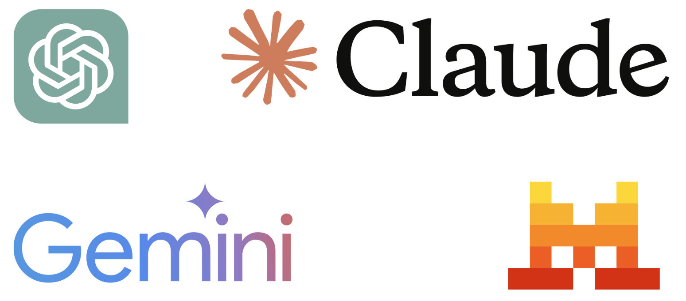
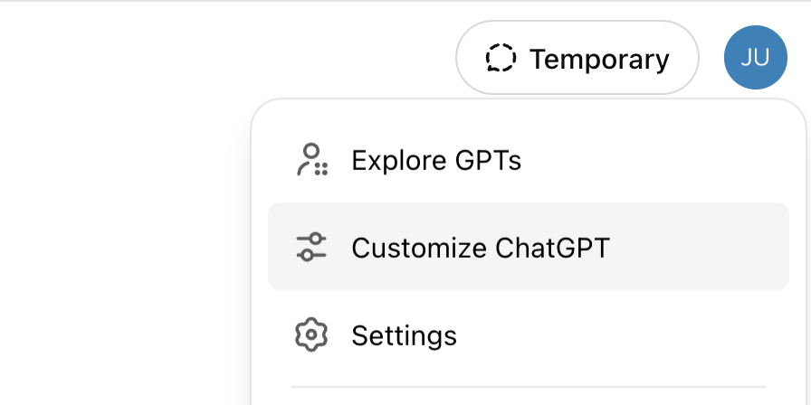
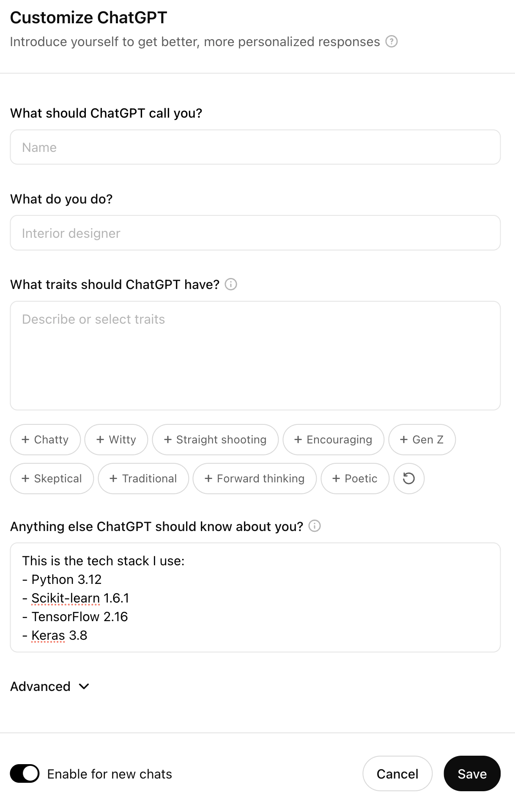
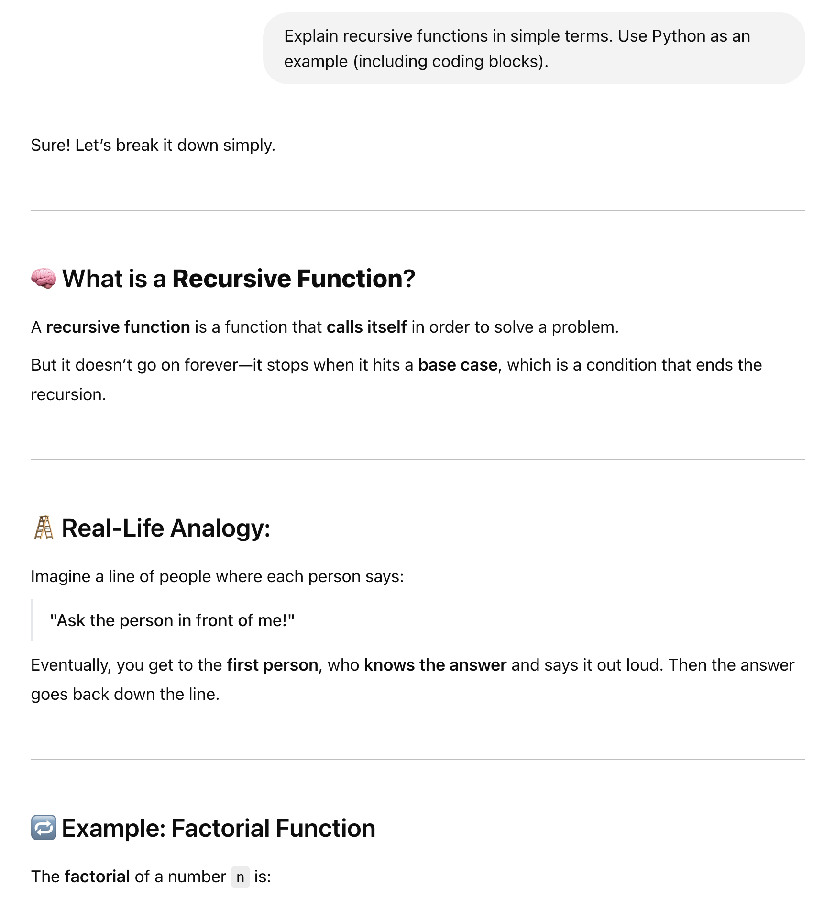
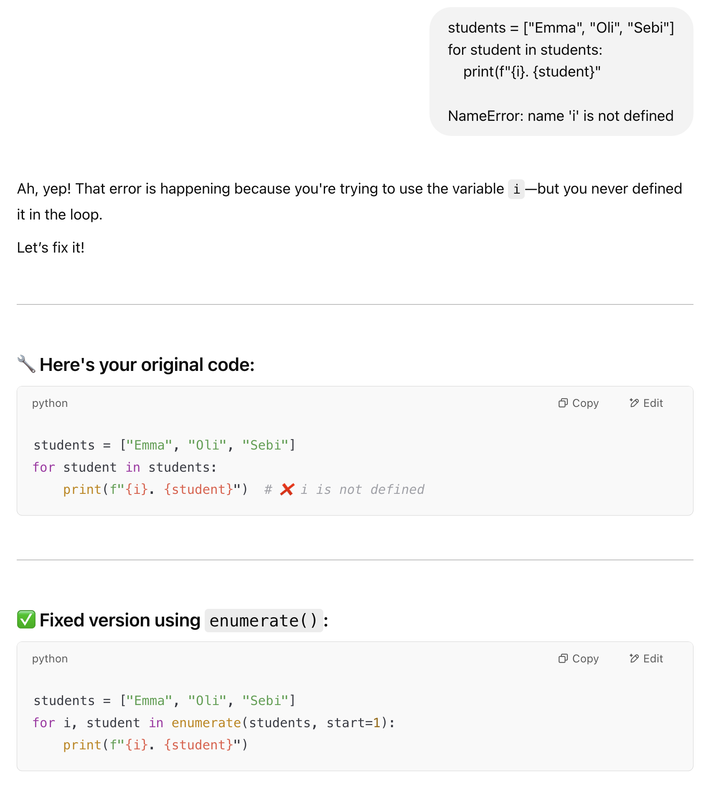
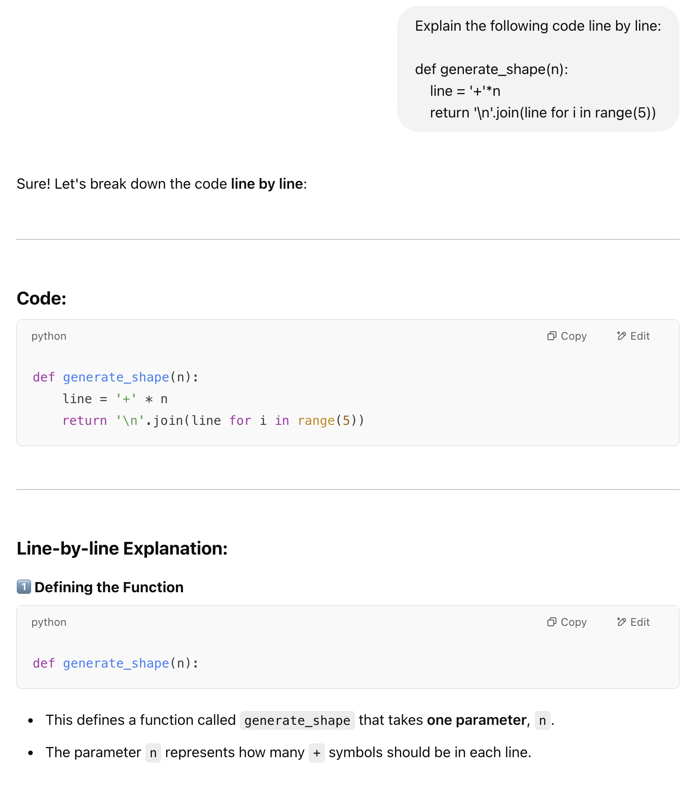
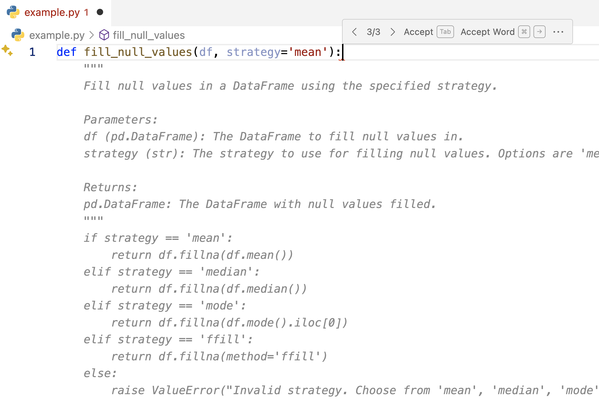
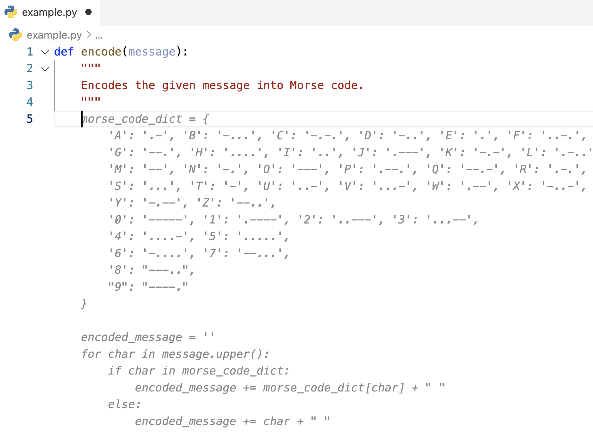
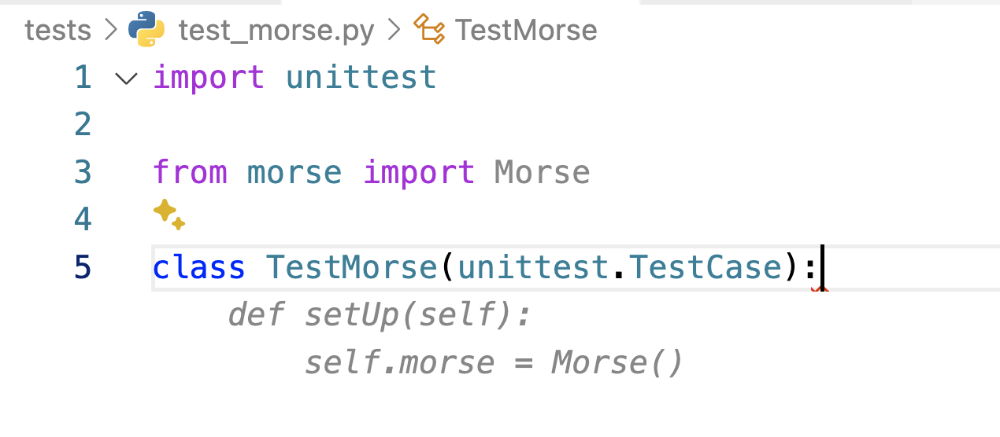
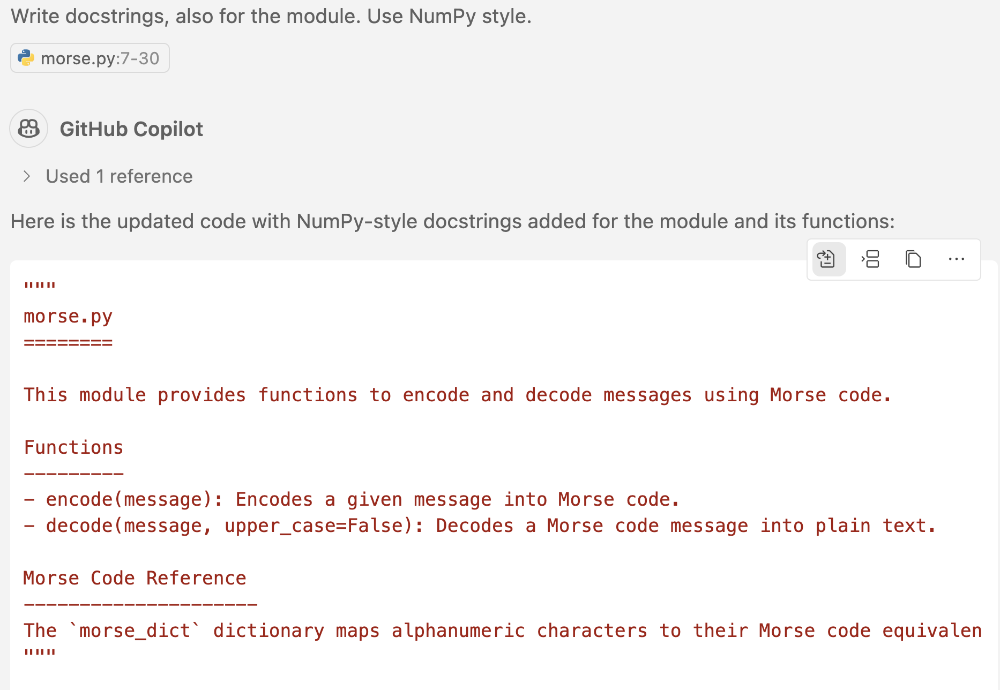

AI as Developer
Comprendre ce que l'IA peut faire pour un développeur, comment l'utiliser efficacement dans son apprentissage, et quelles sont ses limites.
- Cheatsheet — AI as Developer
- ️ Récapitulatif — Erreurs clés à éviter
- 1) Qu'est-ce que l'IA ?
- 2) Les assistants IA chat
- 3) Comment prompter un assistant IA ?
- 4) GitHub Copilot
- 5) Quand utiliser l'IA dans un projet data ?
- 6) L'IA va-t-elle remplacer votre travail ?
- 7) Comment utiliser l'IA pendant le bootcamp ?
- 8) Conclusion
- 9) Prochaines étapes
Comprendre ce que l'IA peut faire pour un développeur, comment l'utiliser efficacement dans son apprentissage, et quelles sont ses limites.
📋 Cheatsheet — AI as Developer
Prompts efficaces
## Expliquer un concept simplement
"Explain object-oriented programming to me in simple terms" # ✅ plutôt que "What is OOP?"
## Déboguer du code
"Here is my code: [...] and the error: [...] explain what went wrong step by step" # ✅ inclure code + message d'erreur
## Expliquer du code ligne par ligne
"Explain this code line by line, focus on the part starting at line X" # ✅ cibler la zone incomprise
## Améliorer du code
"Is this Python code following best practices / is it pythonic?" # ✅ demander une review
"How can I make this code run faster?" # ✅ optimisation
"Can you shorten this code?" # ✅ simplificationBonnes pratiques avec Copilot
## Noms de variables et fonctions explicites → meilleur auto-complétion
def calculate_monthly_revenue_by_category(): # ✅ descriptif
def calc(): # ❌ trop vague
## Ajouter un commentaire pour guider Copilot
## Returns a list of unique emails from a dataframe column
def get_unique_emails(df): # Copilot comprendra ce qu'on attend
## Accepter une suggestion
## Tab → accepter | Alt/Option + [ ] → naviguer entre suggestions⚠️ Récapitulatif — Erreurs clés à éviter
[!CAUTION]
Ne pas soumettre tout son fichier sans contexte
❌ Coller 200 lignes de code sans explication
✅ Fournir uniquement la fonction concernée + le message d'erreur + le contexte
[!CAUTION]
Utiliser l'IA comme seule source de vérité
❌ Faire confiance à une réponse convaincante sans vérifier
✅ Croiser avec StackOverflow, la doc officielle ou demander à un TA
[!CAUTION]
Faire résoudre un challenge entier par l'IA
❌ "Écris-moi la solution de ce challenge"
✅ "Explique-moi pourquoi mon code produit cette erreur"
[!CAUTION]
Copier du code sans le comprendre
❌ Coller la réponse de l'IA et passer au suivant
✅ Lire chaque ligne, comprendre le raisonnement, puis adapter
[!CAUTION]
Partager du code confidentiel
❌ Envoyer du code propriétaire ou sensible dans ChatGPT
✅ Vérifier la politique de l'entreprise avant tout partage
1) Qu'est-ce que l'IA ?
L'IA désigne des systèmes capables d'effectuer des tâches qui requièrent normalement l'intelligence humaine. Le Machine Learning et le Deep Learning en sont des composantes clés.
On distingue deux grandes catégories :
- Narrow AI : spécialisée dans une tâche précise (filtre anti-spam, prédiction de prix, voiture autonome…)
- General AI : capable d'opérer dans des contextes variés
2) Les assistants IA chat

La plupart proposent un tier gratuit, avec des options payantes pour les modèles avancés ou un usage soutenu.
2.1 Ce qu'ils font
Ces assistants s'appuient sur des LLMs (Large Language Models). Ils engagent des conversations en langage naturel, disposent d'une vaste base de connaissances, et peuvent répondre à des questions très variées — code, langues étrangères, cuisine, etc.
[!WARNING]
Leurs réponses peuvent sembler très convaincantes tout en étant fausses. Il faut apprendre à formuler des prompts efficaces pour en tirer le meilleur parti. Pensez à eux comme des "TAs digitaux".
2.2 Instructions personnalisées


Utile pour fournir systématiquement un contexte à ChatGPT (ex. : votre stack technique).
3) Comment prompter un assistant IA ?
3.1 Expliquer un concept simplement

👉 Plutôt que "What is object-oriented programming?", préférer : "Explain object-oriented programming to me in simple terms"
3.2 Déboguer du code

- Fournir le code ET le message d'erreur
- Préciser la ligne incriminée et son contexte
- Les modèles récents peuvent même partir de captures d'écran
3.3 Expliquer du code

- Fournir le code à expliquer et demander une explication ligne par ligne
- Cibler les parties précises qui posent problème
3.4 Améliorer du code
Questions utiles à poser :
- "How can I make this code run faster?"
- "Is this code following best practices in Python? Is it pythonic?"
- "Are my variables clearly named?"
- "Can you shorten this code?"
[!WARNING]
Toujours tester le code après une suggestion d'amélioration — il arrive que l'IA casse des fonctionnalités existantes.
3.5 Comment NE PAS utiliser les assistants IA
- Ne pas tout dumper sans contexte 👉 Aller étape par étape, expliquer le contexte
- Ne pas en faire sa seule source 👉 StackOverflow et un vrai humain restent souvent meilleurs
- Ne pas lui faire résoudre un challenge complet 👉 On se prive de l'apprentissage
- Ne pas partager de code sensible 👉 Le contenu est transféré et peut être stocké
- Ne pas fermer les chats trop vite 👉 Le contexte de la conversation est précieux
4) GitHub Copilot

Entraîné sur des milliards de lignes de code GitHub. Contrairement aux assistants généraux, il est dédié au code — comme une autocomplétion surpuissante, intégrable dans VS Code.
4.1 Installation
- Souscrire un abonnement
- 👉 Installer l'extension VS Code
4.2 Utilisation
- Écrire le nom d'une fonction/méthode/variable suffit souvent à déclencher l'autocomplétion
Tabpour accepter,Alt/Option + [ ]pour naviguer entre les suggestions
[!TIP]
La première suggestion n'est pas toujours la meilleure. Toujours tester le code proposé.
4.3 Écrire une fonction

Le secret pour obtenir de bons résultats : des noms de méthodes et variables extrêmement descriptifs. C'est aussi une bonne pratique de code en général.
4.4 Utiliser des commentaires

Écrire un commentaire expliquant ce que le code doit faire permet à Copilot de générer une suggestion plus précise. En bonus, cela documente le code.
4.5 Écrire des tests

Copilot est particulièrement efficace pour écrire des tests dans une démarche TDD.
4.6 Limitations
- Moins utile que ChatGPT pour des questions larges ou la résolution de bugs complexes
- Focalisé sur les suggestions de code, pas sur la stratégie de résolution
- Peut suggérer du code copié d'autres repos ou utiliser des variables inexistantes
- Peut ne pas suivre les meilleures pratiques (il apprend aussi du mauvais code)
4.7 GitHub Copilot Chat
👉 Installer l'extension Copilot Chat
Permet des conversations avec Copilot, notamment pour générer des docstrings :

5) Quand utiliser l'IA dans un projet data ?
Oui ✅ :
- Code boilerplate
- Comprendre des packages ou des APIs
- Gagner du temps sur du code répétitif
- Bugs difficiles à résoudre
- Problèmes de setup
- Comprendre le code d'un collègue
Non ❌ :
- Copier-coller sans lire
- Packages ayant beaucoup évolué (l'IA aura appris sur de vieux exemples)
- Fonctionnalités très custom ou packages de niche
- Problèmes avec de bonnes réponses sur StackOverflow
6) L'IA va-t-elle remplacer votre travail ?
Honnêtement, personne ne le sait encore avec certitude. Il y aura probablement des conséquences positives et négatives.
Ce qui est sûr : l'IA peut vous rendre plus productif une fois que vous maîtrisez les bases. Elle n'est d'aucune utilité si vous n'avez pas encore appris à coder.
[!TIP]
Continuez à vous challenger et à affûter vos compétences. L'IA est un "TA digital" — utile, mais pas un substitut à l'apprentissage.
7) Comment utiliser l'IA pendant le bootcamp ?
7.1 Pour déboguer votre code
- ❌ Ne pas lui demander de juste corriger votre code
- ✅ Lui demander d'expliquer le message d'erreur
- ✅ Lui demander d'expliquer étape par étape ce qui s'est mal passé
- ✅ Lui demander comment corriger et pourquoi ça fonctionnerait
7.2 Pour comprendre des concepts
- ✅ Lui demander d'expliquer en anglais simple
- ✅ Lui demander des analogies ou des exemples concrets
- ✅ Générer des snippets de code illustrant un concept
- ✅ Lui demander de reformuler une documentation complexe
7.3 Pour progresser dans l'apprentissage
- ✅ Lui demander de vous interroger sur le sujet du jour
- ✅ Lui demander des challenges supplémentaires sur vos points faibles
- ✅ Lui demander du pseudo-code, puis le coder soi-même
- ✅ Lui demander de relire et suggérer des améliorations
- ✅ Lui demander d'expliquer deux approches différentes
- ✅ Lui demander de commenter votre code (vérifier que les commentaires sont exacts)
7.4 Règle générale
- ❌ Ne pas lui faire faire votre travail
- ❌ Jamais copier du code sans comprendre ce qu'il fait
- ❌ Ne pas résoudre un bug sans comprendre l'erreur
- ❌ Ne pas résoudre un bug sans savoir où trouver l'indice dans le traceback
8) Conclusion
En fin de compte, c'est votre bootcamp, votre choix d'utiliser ou non les assistants IA. L'objectif du bootcamp n'est pas de passer tous les tests, c'est d'apprendre.
Notre conseil ? Ne pas utiliser l'IA pour résoudre les challenges à votre place.
Utilisez plutôt différentes sources :
- 📽️ Les slides du cours
- 🎯 Les challenges précédents
- 📚 La documentation officielle
- 🔎 Google, Stack Overflow...
[!TIP]
Pourquoi utiliser un 🤖 quand vous avez de vrais humains ? Les TAs adorent vous aider en conversation directe 💬
9) Prochaines étapes
Plus tard dans le bootcamp, nous verrons :
- 🧠 Comment fonctionnent les LLMs sous le capot
- 🖥️ Comment utiliser les assistants IA dans le code via leurs APIs
- 🦾 Comment construire des systèmes agentiques
Stay tuned 🚀
🧭 Introduction
L'intelligence artificielle (IA) est partout dans le monde du développement. En tant que débutant, tu vas vite te retrouver face à des outils comme ChatGPT ou GitHub Copilot. Ce cours t'explique comment les utiliser intelligemment pour apprendre — pas pour tricher.
À retenir absolument
- L'IA peut t'aider à déboguer, comprendre du code et gagner du temps sur les tâches répétitives.
- L'IA se trompe parfois — même avec assurance. Ne la suis pas les yeux fermés.
- Copier du code sans le comprendre, c'est se tirer une balle dans le pied.
- Bien formuler sa question (le "prompt") change tout à la qualité de la réponse.
- L'IA est un assistant, pas un remplaçant : c'est toi qui dois apprendre à coder.
Analogie fil rouge
Imagine que l'IA est un tuteur disponible 24h/24, qui connaît plein de choses mais qui peut aussi inventer des réponses. Tu ne lui ferais pas aveuglément confiance pour ton examen, mais tu lui poserais des questions pour mieux comprendre. C'est exactement la bonne posture.
Plan du cours
- Qu'est-ce que l'IA concrètement ?
- Les assistants IA de type chat (ChatGPT, etc.)
- Comment bien formuler ses prompts ?
- GitHub Copilot — l'IA intégrée dans ton éditeur
- Quand utiliser l'IA dans un projet data ?
- L'IA va-t-elle remplacer les développeurs ?
- Bonnes pratiques pendant le bootcamp
1. Qu'est-ce que l'IA ?
L'intelligence artificielle désigne des programmes capables d'effectuer des tâches qui demandent normalement de l'intelligence humaine : reconnaître une image, traduire du texte, suggérer du code...
Deux grandes familles existent :
- Narrow AI (IA étroite) : spécialisée dans une seule tâche. Par exemple, le filtre anti-spam de ta boîte mail, ou un système de recommandation de films. C'est ce qu'on croise au quotidien.
- General AI (IA générale) : capable d'opérer dans des contextes très variés, comme un humain. C'est encore un domaine de recherche.
ChatGPT, Copilot, les filtres Snapchat — tout ça, c'est de la Narrow AI. Chacun est très bon dans son domaine, mais ne sait pas forcément faire autre chose.
2. Les assistants IA de type chat
2.1 Ce que c'est
Des outils comme ChatGPT (OpenAI), Claude (Anthropic) ou Gemini (Google) sont des assistants basés sur des LLMs — Large Language Models, c'est-à-dire des modèles entraînés sur des milliards de textes.
Ils comprennent le langage naturel, répondent à des questions variées (code, langues, cuisine, maths...) et peuvent avoir une vraie conversation.
Ces assistants peuvent te donner des réponses très convaincantes... qui sont fausses. C'est ce qu'on appelle les "hallucinations". Toujours vérifier les réponses importantes avec une source fiable (documentation officielle, StackOverflow, un vrai humain).
2.2 Les personnaliser
Tu peux configurer ChatGPT avec des instructions personnalisées pour qu'il connaisse ton contexte à l'avance. Par exemple, tu peux lui dire que tu apprends Python, que tu es débutant, ou que tu travailles sur macOS. Ainsi, il adapte ses réponses sans que tu aies à répéter le contexte à chaque conversation.
3. Comment bien prompter un assistant IA ?
Le "prompt", c'est ce que tu tapes dans l'assistant. La qualité de ta question détermine directement la qualité de la réponse. Voici les cas d'usage les plus utiles.
3.1 Faire expliquer un concept
Mauvaise approche : poser une question sèche.
# ❌ Prompt trop vague — réponse trop générale
"What is object-oriented programming?"
# ✅ Prompt avec contexte et niveau — réponse adaptée
"Explain object-oriented programming to me in simple terms, I'm a complete beginner"La deuxième formulation donne à l'IA le contexte dont elle a besoin pour calibrer son niveau d'explication.
Ajouter "in simple terms" ou "I'm a beginner" dans tes prompts change radicalement la clarté des réponses.
3.2 Déboguer du code
C'est un des usages les plus puissants. Mais attention : il faut fournir le code ET le message d'erreur.
# ❌ Prompt inutile — l'IA n'a pas les infos nécessaires
"My code doesn't work, help me"
# ✅ Prompt efficace — tout le contexte est présent
"Here is my Python code:
def add_numbers(a, b):
return a + b
result = add_numbers(5, '3')
print(result)
And here is the error message:
TypeError: unsupported operand type(s) for +: 'int' and 'str'
Can you explain what went wrong step by step?"L'IA peut alors te donner une explication précise et pédagogique, pas juste corriger à l'aveugle.
Demande toujours à l'IA d'expliquer pourquoi il y a une erreur, pas juste de la corriger. C'est comme ça que tu progresses vraiment.
3.3 Faire expliquer du code existant
Quand tu tombes sur du code que tu ne comprends pas (celui d'un collègue, d'un exemple en ligne...) :
# ✅ Prompt pour comprendre ligne par ligne
"Explain this code line by line. Focus especially on the part starting at line 5:
numbers = [1, 2, 3, 4, 5]
squares = [x**2 for x in numbers]
print(squares)"Ce type de prompt est excellent pour apprendre. Tu peux demander à l'IA d'expliquer la logique, de reformuler, ou de te donner un exemple plus simple.
3.4 Améliorer du code
Une fois que ton code fonctionne, tu peux demander des pistes d'amélioration :
# Questions utiles pour améliorer son code
# ✅ Vérifier les bonnes pratiques Python
"Is this Python code following best practices? Is it pythonic?"
# ✅ Optimiser la vitesse d'exécution
"How can I make this code run faster?"
# ✅ Rendre le code plus lisible
"Can you shorten this code without changing what it does?"
# ✅ Vérifier le nommage
"Are my variables clearly named? How could I improve them?"Après une suggestion d'amélioration, teste toujours le code. L'IA peut parfois "améliorer" une chose et en casser une autre sans s'en rendre compte.
3.5 Ce qu'il ne faut pas faire
Voici les erreurs classiques à éviter absolument :
| Mauvaise pratique | Ce qu'il faut faire à la place |
|---|---|
| Coller 200 lignes sans explication | Fournir uniquement la fonction concernée + le message d'erreur |
| "Résous ce challenge pour moi" | "Explique pourquoi mon code produit cette erreur" |
| Copier-coller la réponse sans lire | Lire chaque ligne, comprendre, puis adapter |
| Faire confiance sans vérifier | Croiser avec la doc officielle ou StackOverflow |
| Envoyer du code confidentiel | Vérifier la politique de l'entreprise avant tout partage |
Tout ce que tu envoies à ChatGPT ou à un assistant en ligne peut être transmis et stocké. Ne partage jamais de code propriétaire, de mots de passe ou de données sensibles.
4. GitHub Copilot
4.1 C'est quoi ?
GitHub Copilot est une IA intégrée directement dans ton éditeur de code (VS Code). Contrairement à ChatGPT où tu poses des questions dans une interface de chat, Copilot propose des suggestions de code en temps réel, pendant que tu écris.
Pense-y comme une autocomplétion super intelligente : tu commences à écrire une fonction, et Copilot essaie de deviner et compléter ce que tu veux faire.
Il a été entraîné sur des milliards de lignes de code public disponibles sur GitHub.
4.2 Installation
- Souscrire un abonnement GitHub Copilot (il existe un accès gratuit pour étudiants).
- Installer l'extension "GitHub Copilot" dans VS Code.
# Dans le terminal VS Code, tu peux aussi vérifier que l'extension est bien active
code --list-extensions | grep copilot
# Doit afficher : GitHub.copilot4.3 Comment l'utiliser au quotidien
Une fois installé, Copilot se déclenche automatiquement quand tu codes :
# Raccourcis clavier essentiels :
# Tab → accepter la suggestion affichée en grisé
# Alt + ] → voir la suggestion suivante
# Alt + [ → voir la suggestion précédente
# Échap → ignorer la suggestionLa première suggestion n'est pas forcément la meilleure. Utilise Alt + [ ] pour naviguer entre les propositions et choisir la plus adaptée.
4.4 Le secret pour de bonnes suggestions : des noms explicites
Copilot génère ses suggestions à partir du contexte visible dans ton fichier. Plus tes noms sont descriptifs, meilleures sont les suggestions :
# ❌ Nom trop vague — Copilot ne sait pas quoi suggérer
def calc():
pass
# ✅ Nom très descriptif — Copilot comprend l'intention et propose quelque chose d'utile
def calculate_monthly_revenue_by_category():
pass
# Copilot va probablement suggérer quelque chose comme :
# return df.groupby('category')['revenue'].sum() / 12C'est une bonne pratique de code en général : des noms explicites rendent le code lisible pour toi, tes collègues, ET pour l'IA.
4.5 Guider Copilot avec des commentaires
Tu peux aussi écrire un commentaire avant une fonction pour décrire ce qu'elle doit faire. Copilot utilisera ce commentaire pour générer le code :
# Returns a sorted list of unique email addresses from a DataFrame column
def get_unique_emails(df):
# Copilot va suggérer quelque chose comme :
return sorted(df['email'].dropna().unique().tolist())
# Le commentaire guide Copilot ET documente ton code en même temps !Deux bénéfices en un : la suggestion est plus précise, et ton code est documenté.
4.6 Écrire des tests avec Copilot
Copilot est particulièrement efficace pour générer des tests unitaires. Il suffit de nommer ton fichier de test correctement et de commencer à taper :
# Dans un fichier test_calculator.py, tape juste :
# test_calculate_monthly_revenue
# ... et Copilot va suggérer un test complet avec des données d'exemple4.7 GitHub Copilot Chat
En plus des suggestions inline, tu peux installer l'extension Copilot Chat pour avoir une conversation directement dans VS Code — très utile pour demander la génération de docstrings (documentation de fonctions) ou expliquer un bout de code sélectionné.
4.8 Les limites de Copilot
Copilot n'est pas magique. Voici ses points faibles :
- Moins bon que ChatGPT pour expliquer des erreurs complexes ou répondre à des questions larges.
- Peut suggérer du code qui utilise des variables inexistantes dans ton contexte.
- Peut proposer du code issu d'autres projets, pas toujours adapté à ton cas.
- Apprend aussi du "mauvais code" — il peut suggérer des pratiques dépassées ou sous-optimales.
- Focalisé sur la génération de code, pas sur la stratégie pour résoudre un problème.
5. Quand utiliser l'IA dans un projet data ?
Tous les cas d'usage ne sont pas égaux. Voici un guide pratique :
Oui, utilise l'IA pour...
# ✅ Générer du code "boilerplate" (répétitif et structurel)
# Exemple : créer un squelette de classe, écrire des imports standards
# ✅ Comprendre un package que tu découvres
# "Explain how pandas groupby works with a concrete example"
# ✅ Gagner du temps sur du code répétitif
# Exemple : reformater des données, créer des colonnes transformées
# ✅ Déboguer un bug difficile
# Exemple : coller le traceback et demander une explication étape par étape
# ✅ Comprendre le code d'un collègue
# "Explain what this function does line by line"Non, évite l'IA pour...
# ❌ Copier-coller sans lire et comprendre
# Tu n'apprendras rien, et le code peut être faux
# ❌ Des packages qui évoluent vite
# L'IA a été entraînée à une date précise — ses connaissances peuvent être obsolètes
# Exemple : des nouvelles versions de scikit-learn, TensorFlow, etc.
# ❌ Des packages très spécifiques ou de niche
# L'IA n'a peut-être pas vu assez d'exemples de ce package pour être fiable
# ❌ Des questions bien documentées sur StackOverflow
# La documentation officielle ou SO sont souvent plus fiables et à jourRègle d'or : utilise l'IA pour accélérer ce que tu saurais faire toi-même, pas pour remplacer ta réflexion.
6. L'IA va-t-elle remplacer les développeurs ?
Honnêtement ? Personne ne le sait encore avec certitude. Il y aura des transformations dans les métiers, c'est inévitable.
Ce qui est sûr :
- L'IA rend les développeurs plus productifs une fois qu'ils maîtrisent les bases.
- Elle n'est d'aucune utilité si tu ne sais pas encore coder — tu ne saurais même pas si la réponse est correcte.
- Les gens qui savent utiliser l'IA intelligemment auront un avantage sur ceux qui l'ignorent ou qui en dépendent aveuglément.
La meilleure façon de te préparer à un monde avec l'IA, c'est de vraiment apprendre à coder. Comprendre les bases te permettra d'utiliser l'IA comme un levier, et non comme un fauteuil roulant.
7. Bonnes pratiques pendant le bootcamp
7.1 Pour déboguer ton code
# ❌ Ce qu'il ne faut pas demander
"Fix my code" # Tu n'apprends rien
# ✅ Ce qu'il faut demander à la place
"Explain what this error message means"
"Walk me through what went wrong step by step"
"Explain how to fix it and WHY that fix works"7.2 Pour comprendre des concepts
# ✅ Exemples de bons prompts pour apprendre
"Explain list comprehensions in Python in simple terms with a concrete example"
"Give me an analogy to understand what a decorator is"
"Show me a short code snippet that illustrates how a for loop works"
"Rewrite this documentation in simpler language: [coller la doc]"7.3 Pour progresser activement
# ✅ Utiliser l'IA comme un partenaire d'entraînement
"Quiz me on today's topic: Python functions"
"Give me a small coding challenge on list manipulation"
"Write pseudo-code for this problem, I'll code it myself"
"Review my code and suggest improvements, don't rewrite it"
"Explain two different ways to solve this problem"7.4 Les règles d'or du bootcamp
Ces règles sont là pour que tu apprennes vraiment, pas juste pour "passer les tests" :
- Ne fais jamais faire ton travail à l'IA.
- Ne jamais copier du code sans comprendre chaque ligne.
- Ne jamais résoudre un bug sans comprendre quelle ligne cause l'erreur et pourquoi.
- Apprendre à lire un traceback (message d'erreur Python) est une compétence fondamentale — l'IA ne doit pas te court-circuiter sur ça.
Les TAs (Teaching Assistants) humains sont souvent bien meilleurs que l'IA pour t'accompagner sur des problèmes spécifiques au bootcamp. N'hésite pas à les solliciter !
🎯 Questions de vérification
Question 1 — Compréhension des outils
Quelle est la différence principale entre ChatGPT et GitHub Copilot ? Dans quel contexte utiliserais-tu l'un plutôt que l'autre ?
Question 2 — Bonne pratique de prompt
Tu as ce code Python qui produit une erreur. Écris un prompt efficace pour demander de l'aide à un assistant IA :
def divide(a, b):
return a / b
result = divide(10, 0)(L'erreur est : ZeroDivisionError: division by zero)
Question 3 — Esprit critique
L'IA te propose une correction de code qui semble logique. Quelles étapes dois-tu suivre avant de l'intégrer à ton projet ?
Question 4 — Usages appropriés
Donne deux situations où tu utiliserais l'IA dans un projet data, et deux situations où tu éviterais de l'utiliser. Justifie chaque choix.
📌 TL;DR
- L'IA (ChatGPT, Copilot...) est un outil puissant pour apprendre à coder, mais ce n'est pas une solution miracle.
- La qualité du prompt détermine la qualité de la réponse : donne toujours le contexte, le code, et le message d'erreur.
- GitHub Copilot s'intègre dans VS Code et propose des suggestions de code en temps réel — des noms de variables descriptifs améliorent la pertinence des suggestions.
- L'IA se trompe parfois avec assurance : vérifie toujours les réponses importantes auprès de sources fiables.
- Ne partage jamais de code confidentiel ou de données sensibles dans un assistant IA en ligne.
- Utilise l'IA pour comprendre et progresser, pas pour faire le travail à ta place.
- L'IA est utile pour le code boilerplate, déboguer, et comprendre des packages — moins fiable pour les packages très récents ou de niche.
- Copier du code sans le comprendre te prive de l'apprentissage et peut t'exposer à des bugs silencieux.
- Les TAs humains restent irremplaçables pour un accompagnement contextualisé au bootcamp.
- L'IA amplifie les compétences de ceux qui savent coder — raison de plus pour vraiment apprendre les bases.
A. Concepts du cours
Qu'est-ce qu'un LLM, vraiment ?
Un Large Language Model (GPT-4, Claude, Gemini, Llama…) est un modèle de deep learning entraîné à prédire le mot suivant dans une phrase. Étonnamment, en faisant ça à très grande échelle (centaines de milliards de paramètres, des trilliards de tokens d'entraînement), le modèle développe des capacités émergentes : raisonnement, traduction, résumé, génération de code.
Ce qu'un LLM n'est pas :
- ❌ Un moteur de recherche : il ne consulte pas le web en temps réel (sauf via tools)
- ❌ Une base de données : il ne retient pas d'informations exactes après son entraînement
- ❌ Une calculatrice : il génère des chiffres plausibles, pas vérifiés mathématiquement
- ❌ Un oracle : il ne sait pas ce qu'il ne sait pas, et hallucine confidentement
Ce qu'un LLM est :
- ✓ Un excellent générateur de texte cohérent
- ✓ Un traducteur entre langages (humains et informatiques)
- ✓ Un transformeur de format (markdown → JSON, prose → bullet points)
- ✓ Un assistant de programmation capable d'écrire du code idiomatique
Analogie : un LLM est un stagiaire extrêmement cultivé mais qui n'a aucune mémoire entre les sessions et qui parle parfois trop vite. Il connaît tous les livres mais ne peut pas vérifier ce qu'il dit. Vous lui confiez une tâche, vous vérifiez systématiquement, et il vous fait gagner un temps fou. Le confondre avec un expert autonome est l'erreur la plus coûteuse.
Les bases du prompting
Un prompt est l'instruction que vous donnez au LLM. La qualité du prompt détermine la qualité de la réponse. Cinq principes :
1. Soyez spécifique sur le contexte et la sortie attendue.
❌ Mauvais : "Fais-moi une fonction de tri"
✓ Bon : "Écris une fonction Python qui trie une liste de dicts
par leur champ 'priority' (int, plus grand = plus prioritaire),
en cas d'égalité par 'created_at' (datetime, plus ancien d'abord).
Retourne une nouvelle liste, sans modifier l'originale.
Ajoute des type hints et un docstring exemple."2. Donnez des exemples (few-shot prompting).
Convertis ces phrases en SQL :
Phrase: 'Combien d'utilisateurs ont commandé en 2024 ?'
SQL: SELECT COUNT(DISTINCT user_id) FROM orders WHERE YEAR(created_at) = 2024;
Phrase: 'Quel est le revenu total par catégorie ?'
SQL: SELECT category, SUM(amount) FROM orders GROUP BY category;
Phrase: 'Liste les 5 meilleurs clients par revenu'
SQL:3. Décomposez les tâches complexes en étapes.
Au lieu de "génère un pipeline ML complet", demandez successivement : "1. propose une stratégie de cleaning, 2. liste les features à créer, 3. choisis 3 modèles à comparer, 4. écris le code de chaque étape".
4. Demandez un raisonnement explicite (chain-of-thought).
Ajouter "Explique ton raisonnement étape par étape avant la réponse finale" améliore drastiquement la qualité sur les problèmes de logique. Le modèle "réfléchit" en générant ses pensées.
5. Itérez.
Le premier prompt n'est presque jamais le bon. Lisez la réponse, identifiez ce qui ne va pas, reformulez. C'est un dialogue, pas un oracle.
Hallucinations et fact-checking
Une hallucination est une réponse plausible mais factuellement fausse. Le LLM ne "ment" pas par malice — il génère le texte le plus probable selon ses patterns d'entraînement, sans capacité de vérifier la véracité.
Exemples typiques :
- Inventer une fonction Python qui n'existe pas (
pandas.DataFrame.flatten()) - Citer un papier scientifique avec un titre, des auteurs et une année plausibles mais 100% inventés
- Donner un chiffre statistique précis (PIB, population) qui est faux
- Affirmer qu'une bibliothèque supporte une feature qu'elle ne supporte pas
Règle d'or : ne jamais copier-coller du code généré sans le faire tourner. Ne jamais citer un fait historique ou scientifique sans vérifier. Ne jamais appeler une API d'un fournisseur sans avoir lu sa doc officielle. Le LLM est un assistant, pas une source primaire.
Pair programming avec un LLM
Trois patterns d'interaction efficaces avec un assistant comme Cursor, Copilot ou Claude :
1. Génération depuis spec : vous décrivez ce que vous voulez, le LLM génère un premier jet.
"Écris une fonction Python qui prend un DataFrame de transactions
(colonnes: user_id, amount, timestamp) et renvoie pour chaque user
le panier moyen calculé sur les 30 derniers jours par rapport à
maintenant. Gère le cas où un user a 0 transaction récente (NaN)."2. Refactoring par exemple : vous montrez du code "avant" et demandez "après".
"Refactor ce code pour qu'il soit plus pythonique et performant :
[code à refactorer]
Garde la même API publique."3. Debug interactif : vous collez un message d'erreur et demandez l'analyse.
"J'ai cette erreur :
ValueError: could not convert string to float: 'unknown'
Sur cette ligne :
df['price'] = df['price'].astype(float)
Voici les premières lignes du DataFrame :
[snippet]
Quelles sont les hypothèses possibles et comment investiguer ?"Bonne pratique : utilisez le LLM comme un canard en plastique amélioré. Le simple fait de formuler clairement votre problème pour le décrire à l'IA résout déjà 30% des bugs. Pour les 70% restants, sa réponse vous donne souvent une piste utile.
B. Compléments avancés
Tool use et function calling
Les LLM modernes peuvent appeler des fonctions externes (calculatrice, API, base de données) au lieu de générer une réponse directement. C'est la base des agents.
# OpenAI function calling (équivalent chez Anthropic, Mistral, etc.)
tools = [{
"type": "function",
"function": {
"name": "get_weather",
"description": "Get current weather for a city",
"parameters": {
"type": "object",
"properties": {
"city": {"type": "string"}
},
"required": ["city"]
}
}
}]
response = client.chat.completions.create(
model="gpt-4o",
messages=[{"role": "user", "content": "Quel temps fait-il à Paris ?"}],
tools=tools,
)
# Le modèle renvoie :
# tool_calls=[{"name": "get_weather", "arguments": {"city": "Paris"}}]
# À VOUS d'exécuter la fonction et de réinjecter le résultatL'avantage : le LLM ne "sait" pas la météo, mais il sait quand appeler une fonction qui la connaît. Ce pattern résout les hallucinations factuelles : pour tout ce qui est factuel et précis, le LLM délègue à un outil.
Limites du context window
Le context window est la quantité de texte que le LLM peut considérer en une fois. En tokens (≈ 0.75 mots) :
| Modèle | Context window |
|---|---|
| GPT-3.5 | 16k tokens |
| GPT-4o | 128k tokens (~96k mots) |
| Claude 3.5 Sonnet | 200k tokens |
| Claude Opus 4.6 (1M) | 1M tokens |
| Gemini 1.5 Pro | 1-2M tokens |
Conséquences :
- Pour des questions sur un long document, le document doit tenir dans le context. Au-delà, on utilise du RAG (Retrieval-Augmented Generation) : on découpe en chunks, on indexe, et on injecte uniquement les chunks pertinents au prompt.
- Le context inclut votre prompt système, l'historique de conversation, et la réponse à venir. Si votre conversation devient longue, le modèle "oublie" le début (les tokens les plus anciens sont coupés).
- Plus le context est long, plus la latence et le coût augmentent linéairement avec le nombre de tokens.
Analogie : le context window est la mémoire de travail du LLM. C'est comme un humain qui aurait toute la documentation du monde en bibliothèque mais qui ne pourrait poser que les livres ouverts qui tiennent sur son bureau. RAG = un assistant bibliothécaire qui sait quels livres ouvrir pour répondre à une question donnée.
Évaluer la qualité d'une réponse
Six critères pour juger une réponse de LLM, surtout sur du code :
| Critère | Question |
|---|---|
| Correctness | Le code fait-il ce qui est demandé ? |
| Completeness | Tous les cas (edge cases, erreurs) sont-ils gérés ? |
| Idiomaticity | Le code est-il pythonique ou copie de Java/JS ? |
| Performance | Le code passe-t-il à l'échelle, ou est-il O(n²) caché ? |
| Security | Y a-t-il des injections SQL, XSS, secrets en clair ? |
| Testability | Le code peut-il être testé sans monkey-patching extensif ? |
Pour les réponses non-code (explications, analyses), les critères deviennent : factualité (vérifiable), exhaustivité (couvre les nuances), absence de biais.
Anti-pattern majeur : copier-coller un snippet de Stack Overflow ou de LLM dans votre code base sans le comprendre. Vous accumulez de la dette technique invisible. Avant d'intégrer du code généré, lisez-le ligne par ligne et assurez-vous que vous pourriez l'avoir écrit. Si vous ne pouvez pas l'expliquer, vous ne pouvez pas le maintenir.
C. Questions de compréhension
Q1 : Pourquoi un LLM peut-il vous donner une fonction Python qui semble parfaite mais qui plante au runtime ?
💡 Voir l'indice
Pattern matching vs vérification.
✅ Voir la réponse
Parce que le LLM génère du code par probabilité, pas par exécution. Il ne "compile" pas mentalement le code, il assemble des tokens qui ressemblent statistiquement à du code Python.
Conséquences :
- Il peut inventer des méthodes qui n'existent pas mais qui sonnent juste (
df.flatten(),np.argsort_descending()). - Il peut mélanger des syntaxes de versions différentes (utiliser une feature de Python 3.12 dans un environnement 3.8).
- Il peut écrire un code grammaticalement correct mais sémantiquement faux (utiliser
meanau lieu demedianparce que c'est plus fréquent dans son entraînement).
La parade :
- Tester systématiquement, lancer le code, lire les erreurs.
- Utiliser un linter/IDE qui détecte les méthodes inexistantes immédiatement.
Cursor et Copilot ont de plus en plus d'intégrations avec des type checkers qui valident en temps réel — ça réduit drastiquement les hallucinations de code.
Q2 : Quelle est la différence entre fournir des "examples" dans le prompt et faire du fine-tuning d'un modèle ?
💡 Voir l'indice
Durée et coût.
✅ Voir la réponse
Few-shot prompting : vous donnez 2-10 exemples directement dans le prompt à chaque appel.
- ✓ Avantages : pas de coût d'entraînement, modifications instantanées, fonctionne sur n'importe quel modèle.
- ❌ Inconvénients : occupe de la place dans le context window, doit être répété à chaque appel, limité à quelques exemples.
Fine-tuning : vous entraînez le modèle sur des centaines/milliers d'exemples, ce qui modifie ses poids.
- ✓ Avantages : pas besoin d'inclure les exemples à chaque appel, performance souvent supérieure, peut apprendre un style ou un format spécifique en profondeur.
- ❌ Inconvénients : coûteux ($10-1000 selon la taille), prend des heures, plus complexe à itérer, ne marche pas pour tous les modèles (Claude n'expose pas le fine-tuning).
Règle pratique :
- Commencer par le few-shot.
- Si la qualité n'est pas suffisante après prompting soigné, passer au RAG (qui injecte du contexte pertinent).
- N'envisager le fine-tuning que pour des cas très spécialisés et un volume d'usage qui justifie le coût.
Q3 : Vous utilisez Copilot/Cursor pour générer un script qui appelle une API. Le code semble bon mais vous remarquez que la clé d'API est en dur dans le fichier. Que faut-il faire et pourquoi est-ce un problème de sécurité critique ?
💡 Voir l'indice
Git history.
✅ Voir la réponse
Trois actions immédiates :
- Déplacer la clé hors du code dans une variable d'environnement (
os.getenv("API_KEY")) ou un.envchargé viapython-dotenv. - Ajouter
.envau.gitignoredès maintenant. - Si vous avez déjà committé la clé, considérez-la compromise : elle est dans l'historique git pour toujours et sera détectée par des bots dans les heures qui suivent un push. Révoquez-la chez le fournisseur et générez-en une nouvelle.
Pourquoi c'est critique : un repo public avec une clé OpenAI est typiquement détecté en moins de 5 minutes par des scripts automatisés, et utilisée pour du minage de crypto ou de la génération de spam — vous payez la facture.
Pour les repos privés c'est moins urgent mais reste un risque.
Leçon générale : les LLM génèrent souvent des exemples avec des secrets en dur parce que c'est ce qu'il y a dans leur dataset d'entraînement (Stack Overflow est plein de mauvais exemples). Vous devez toujours revoir et corriger ce pattern.
Question d'entretien sécurité classique : "Comment géreriez-vous des secrets dans une application Python ?" — réponse : variables d'environnement, gestionnaires de secrets cloud, jamais en dur.
Ressources additionnelles
- OpenAI Prompt Engineering Guide
- Anthropic Prompt Engineering
- Prompt Engineering Guide — référence open source
- AI Engineering (Chip Huyen) — pour aller au-delà du prompting : RAG, fine-tuning, eval
- GitHub Copilot best practices
- Karpathy: Intro to LLMs — vidéo de fond pour comprendre comment ça marche